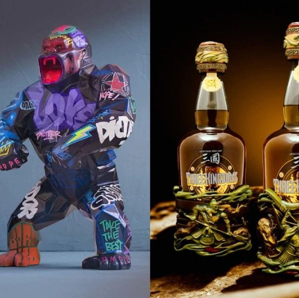

SeeDAO｜NFT如何应用于烈酒行业
作者: Queeny
分类:
NFT, 艺术, 品牌, 烈酒行业, 所有权
该文让我们看到了传统酒业在拥抱 NFT 方面的诸多尝试，并列举了多个品牌的成功市场试水案例。

该文让我们看到了传统酒业在拥抱 NFT 方面的诸多尝试，并列举了多个品牌的成功市场试水案例，既点明了烈酒 NFT 平台在提供所有权账本、保真凭证等一系列的服务上的优势，也展示出通过将艺术与 NFT 融合，结合 IRL 活动，可以为提升用户体验带来质的飞跃。热卖单品：Dictador Orlinski 5 Decades，酒瓶由法国艺术家 Richard Orlinski 手绘；情系三国，由 The Chambers by Cask 与 Mighty Jaxx 联手打造，灵感来源于中国文学名著《三国演义》。尽管我们试图视而不见，非同质化代币（NFT）依然顽强地在市场上留了下来。根据 DappRadar 的数据， 2021 年第三季度 NFT 的销售总额增长到 107 亿美元，比前三个月增长了八倍。从艺术品到视频或音频记录，NFT 通常用于代表任何可以被数字化的物件。它是一种存储在区块链数字账本上的、不可互换的非同质化数据。人们在网上经常使用加密货币对其进行买卖。BlockBar 是世界上首个葡萄酒和烈酒 NFT 直销平台。通过这个平台，你也可以拥有稀有烈酒藏品等现实世界物品的 NFT。苏格兰威士忌品牌 Glenfiddich──去年与 BlockBar 合作的首批品牌之一，在几分钟内就以 18,000 美元的价格成功售出 15 瓶稀有的 46 年纯麦芽威士忌。竞标者收到的 NFT 是一个酒瓶的旋转艺术形象，它同时也用作真品和所有权证书。同样，哥伦比亚朗姆酒生产商 Dictador 与 BlockBar 合作，以每瓶 25,000 美元的价格出售 10 瓶陈年朗姆酒——这些 1976 年的 Dictador Generations 朗姆酒装在精致的 Lalique 水晶瓶中。买家收到的数字收据采用了 NFT 形式，可用于转卖或兑换。据说在二级市场上，Dictador 瓶装酒的售价已经高达 36,000 美元。另见： 对葡萄酒和知识的渴望
（https://www.theedgesingapore.com/options/behind-bottle/thirst-wine-and-knowledge?utm_source=website&utm_medium=article&utm_campaign=ONPAGESEO）另一个艺术与烈酒界相结合的例子是，在去年的迈阿密巴塞尔艺术展上，Dictador 以高达 10 万美元的售价成交了一瓶最昂贵的朗姆酒，酒瓶由法国当代艺术家 Richard Orlinski 手绘。这件艺术品（现仍有售）是 "Dictador Orlinski 5 Decades " 系列的一部分，其特色雕刻酒瓶内装有酿于 1966 年、1976 年、1986 年、1996 年和 2006 年的陈年朗姆酒。毫无疑问，Dictador 是投资级朗姆酒领域的领导者，也是该艺术的支持者。为了巩固这一地位，Dictador 最近推出了一个名为 ArtHouse Spirits DAO （去中心化自治组织）的 NFT 财富俱乐部，以此促进艺术合作。一开始，它将出售 2 万件 NFT，内容是绘制在 Dictador 酒瓶上的国际化大都市地图，由波兰当代街头艺术家 Mariusz Waras（又名M-city）创作。这个财富俱乐部还有一系列其他权益。除了拥有 NFT ，这个奢华私密社区的成员还会获得价值 300 美元的欢迎礼包，可以参加社交和辅导活动；通过获得某些独特朗姆酒藏品的部分所有权，社区成员还可以参与金库治理，以及获得许多其他权益。NFT 销售筹得的资金将用于组建 DAO 的金库，其中包括精选的、有着良好升值记录的奢侈品资产，有望为社区成员提供稳定的被动收入。另见： 轰动：Richard Geoffroy 凭借 IWA 5 在清酒界取得新突破
（https://www.theedgesingapore.com/options/behind-bottle/new-sensation-richard-geoffroys-iwa-5-breaks-new-ground-sake-world?utm_source=website&utm_medium=article&utm_campaign=ONPAGESEO）The Johnnie Walker experience上个月，世界排名第一的苏格兰威士忌 Johnnie Walker 在 BlockBar 上发布了 7 瓶极其罕见的 48 年陈 “Johnnie Walker 风味大师 “ 系列，售价为 35,000 美元，这在该老字号尚属首次。除了 NFT，买家还将获得由艺术家 Kode Abdo（又名 BossLogic）为他们专门创作的酒瓶数字海报，并获得在苏格兰的独家品牌体验。“ Johnnie Walker 风味大师 ” 由麦芽大师 Donna Anderson 调配，从极其稀有的威士忌中精酿而成——所有威士忌都陈酿了至少 48 年——由 Port Dundas、Brora、Glen Albyn 和 Glenury Royal 四家 " 幽灵 " 酿酒厂出品。威士忌装在一个人工吹制的绿色巴卡拉水晶酒瓶中，精美地摆放在一个手工雕刻的木盒中。每瓶酒都意味着开启一次 Johnnie Walker 王子街之行的机会——去到该品牌在苏格兰爱丁堡的客户体验中心，沉浸在 Johnnie Walker 的醇香之旅和该国的威士忌酿造文化之中。NFT 持有者还将入住宫殿式的 Gleneagles 别墅，参观标志性的 Glenkinchie 酿酒厂，在导游的带领下走访 Diageo 档案馆，并尊享 Diageo 藏品中最稀有和最典藏级的威士忌 VIP 品酒会。Romance of the Three Kingdoms点击这里，了解更多生活方式、艺术和时尚趋势。
（https://www.theedgesingapore.com/options/dine/native-london-sees-squirrel-rag-smart-business-move?utm_source=website&utm_medium=article&utm_campaign=ONPAGESEO）在当地，苏格兰精酿威士忌本土供应商 The Chambers by Cask 与备受赞誉的情调技术公司 Mighty Jaxx 合作，打造了三款独特的工艺收藏级酒瓶，灵感来自中国文学名著《三国演义》中的传奇人物。Caperdonich、Glen Keith 和 Glen Keith 各自以 20 年、22 年和 23 年陈的纯麦芽威士忌装盛，每一款酒瓶的设计灵感分别来自于关羽、刘备和张飞三位将军的个性，威士忌的调性也与之相配。作为一个实物藏品系列，售价为 5,888 新加坡元的套装产品都同时会空投一枚限量版 NFT，可在 Mighty Jaxx 的手机 APP 上获取。该 NFT 可用作所有权证书，并为持有人解锁酒瓶设计的数字艺术作品。NFT 持有者还将有机会以 188 新元的价格购买 Mighty Cask 精选的限量迷你三件套。Relive Sago House’s long-gone cocktails获奖酒吧 Sago House 的做法则有些别出心裁，它用以太坊上的 ERC-721 代币（所有 NFT 交易市场均可使用）来销售鸡尾酒。每枚代币只需 100 美元，这笔小小的投资可以解锁 10 款原创鸡尾酒，你既可以在网上出售，也可以在酒吧兑换饮用。该活动的创意来自创始人 Jay Gray、Desiree Jane Silva 和 George Abishek，目的是为了庆祝和纪念酒吧最终推出超过 270 款原创鸡尾酒，以及在 2022 年亚洲最佳酒吧排行榜上名列 31 位，和位列 2021 世界 50 最佳酒吧排行榜第 63 位。自酒吧开业以来，每周该团队都会推出一份包括六类新鸡尾酒的原创酒单：浓烈款、烈性偏淡款、雏菊款、高杯款、酸味款和热带款。一周结束后，这六款鸡尾酒就永远消失...... 而现在，Sago House NFT 持有者则可以独家解锁酒单上的时间胶囊，享用购买的鸡尾酒。这一玩法是该酒吧独立经营的一种方式，起到线上 kickstarter 众筹的作用，帮助他们为即将出版的第一本鸡尾酒书《胆小勿试，第一卷》募集资金。Sago House NFT 持有者将享有独家会员福利，包括新书发布时先睹为快，以及参加专属会员活动等。或许你也和我们一样好奇，酒类品牌为什么不能单纯地通过拍卖行，或自己的网站来以传统方式销售烈酒呢？答案是，为什么要循规蹈矩呢？像 BlockBar 这样的平台算得上是一场及时雨，提供所有权账本，保真凭证，甚至在你没想好要拿你的宝贝烈酒做什么的时候替你贮藏，处处替你做好准备。无论酒类品牌打算以何种方式销售他们的 NFT 藏品，单独销售还是与数字艺术或奢华之旅搭配——我们都期待着他们下一步的创新——当然投资属性不可或缺。如果更高的转售价值还不足以打动你参与其中，就想一想，当你告诉朋友你持有烈酒 NFT 时有多潮吧。这样会不会让你心动呢？作者：Jasmine Alimin
译者：Queeny
校对：Roy
排版：Qiao
审核：SuanNai